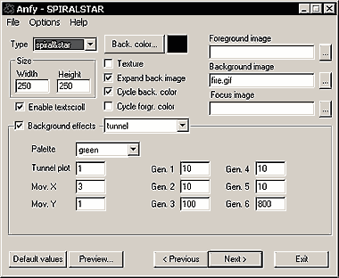
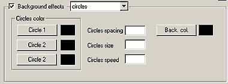
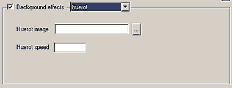
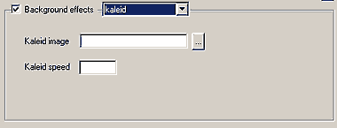
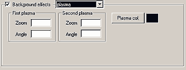
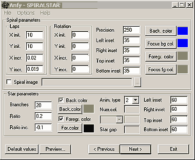

|
This applet shows some animations of a spiral and/or a star drawn
in real-time
with psychedelic backgrounds.
[For more technical
information about the available parameters, click here.]
Most parameters are self-explanatory and you can
always see brief description of each parameter by moving the mouse
pointer over the wizard.

Basic Settings
There are 3 types of effects in this applet. Choose either Spiral,
Star, or Both from the Type pull-down menu. Specify
the applet Width, Height, and select Enable Textscroll
if appropriate.
Background and Foreground Images
Set either Background Image or Background Color.
If the BK image is smaller than the applet size, check Expand
Back Image option. This will expand the image right across the
applet area. If the BK image is smaller than the applet area, and
Texture box is checked out, the image is tiled to cover the
applet area. Optionally, you could set the Foreground Image,
and Focus Image which is shown only when you mouse-over the
applet area. We suggest you to use transparent gifs for these focus
and foreground images.
Background FX
Other than a simple BK color or image, you could choose special
BK effects. Tunnel, circle, huerot, kaleid, and plasma effects are
available for your choice.
If your choice is Tunnel, configure the Color Palette,
Tunnel Plot value (>0), horizontal and vertical tunnel
movement at Move XY from [0, 20], and 6 Generator
values. A value for each generator has to be in [1, 1000]. Note
that the tunnel is based on a 512*512 image so when you make the
applet width and/or height greater than 400, the routine will try
to adjust them to the applet size so you can see approximations
and black borders.

If your choice is Circle, configure the colors
for the three circles, Circle Spacing, Circle Size,
Circle Speed, and BK Color.

If your choice is Huerot, select the image
for hue-rotation effect. The image size must be equal to or greater
than the applet size. Huerot Speed value controls how fast
hue shifts.

If your choice is Kaleid, select the image
for the effect, and give the Kaleid Speed value. With kaleid
effect enabled, both the applet and kaleid image should be squared.
If you use the kaleid as background effect remember to use images
which are at least 145% of applet size (or set the applet
size as 65% of kaleid image). Smaller images will make the
applet lock.

If your choice is Plasma, set float values
for First and Second Plasma Zoom Factors, and Rotation
Angles. Then select Plasma Color.

Spiral
Define the initial XY Spiral Lap values, and
give floating point values for XY increments. In the same
manner, set the initial XY Rotation values, and XY increments.
Precision value controls the spiral detail level, and the
value must be in [0, 255]. Then, set Left, Right, Top and
Bottom Inset values for the spiral. The internal area of
the spiral is filled with Background Color, and the outline
is colored in Foreground Color. When you mouse-over the applet
area, Focus Background Color and Focus Foreground Color
replace BKC and FGC respectively. If you don't want this shift to
happen, do not select different colors for focus colors. Finally,
you can draw over the spiral vertexes an image, specified in the
Spiral Image box.
Star
The value for Branches is the initial number
of branches of the star, while the values for Ratio and Ratio
Increment are the initial and incremental growing ratios of
the star. Then, set the star Background and Foreground
Colors. Or, disable them. Give values to Left, Right, Top,
and Bottom Insets boxes.
There are 4 Animation Types. Each number activate/deactivate
the rest of the animation options. If your choice is No.3, you need
to set the Number of Colors, and while selecting a particular
Color Number in the color pull-down menu, select the color
in the pallet right next to it. Star Gap value controls how
many pixels may be used to draw every new color. If your choice
is No. 4, only Color 1 is active.
Finally, there is the possibility to switch on/off
the color cycling for the BG and FG using Cycle Background Color
and Cycle Foreground Color check boxes. This option will
affect both spiral and star.
Now, please go to the
expert menu.
|